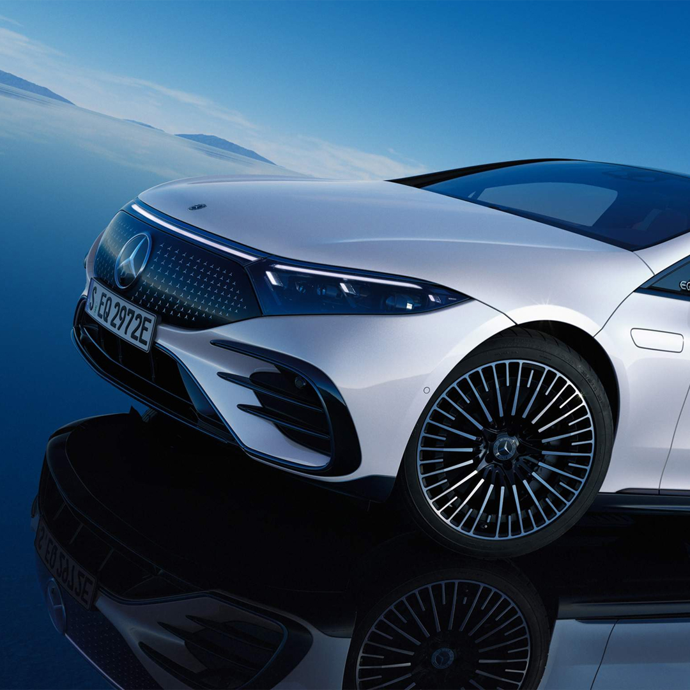
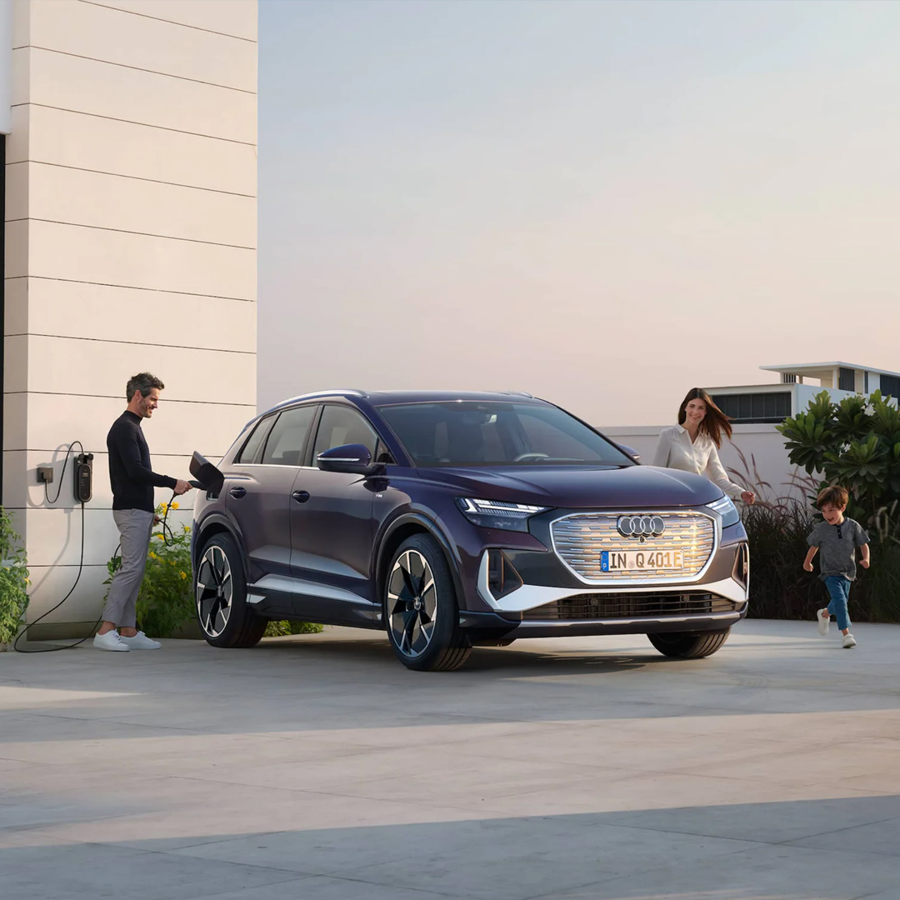
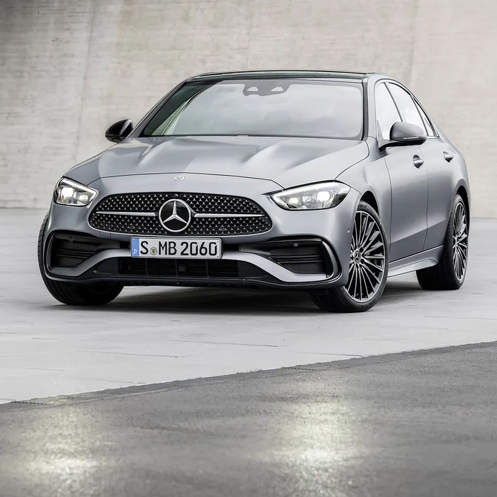
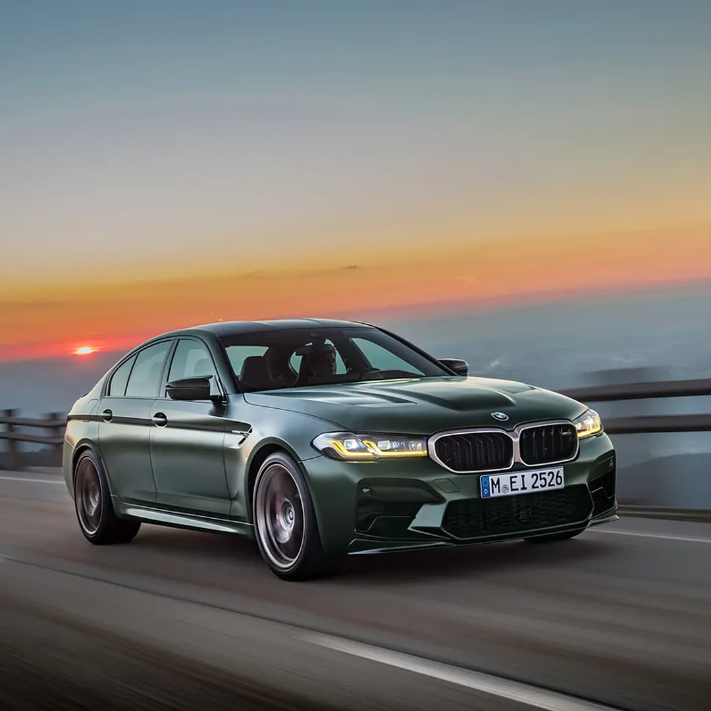
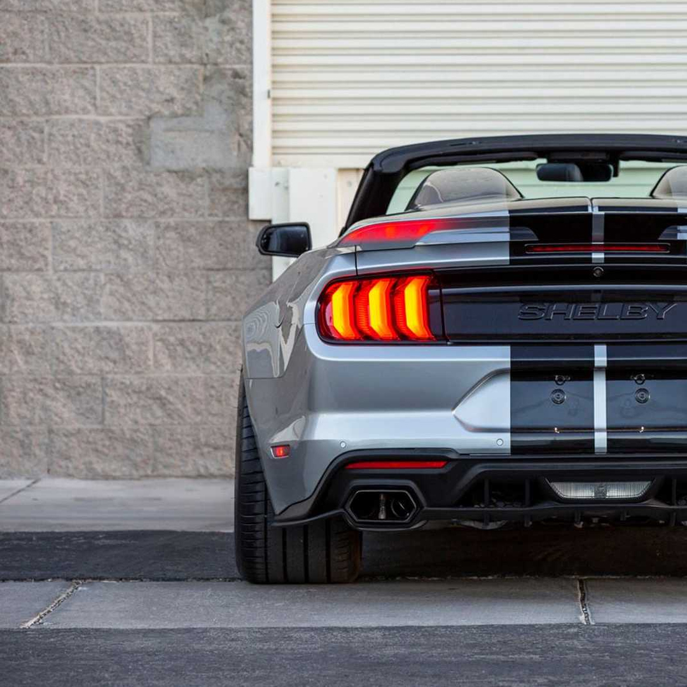
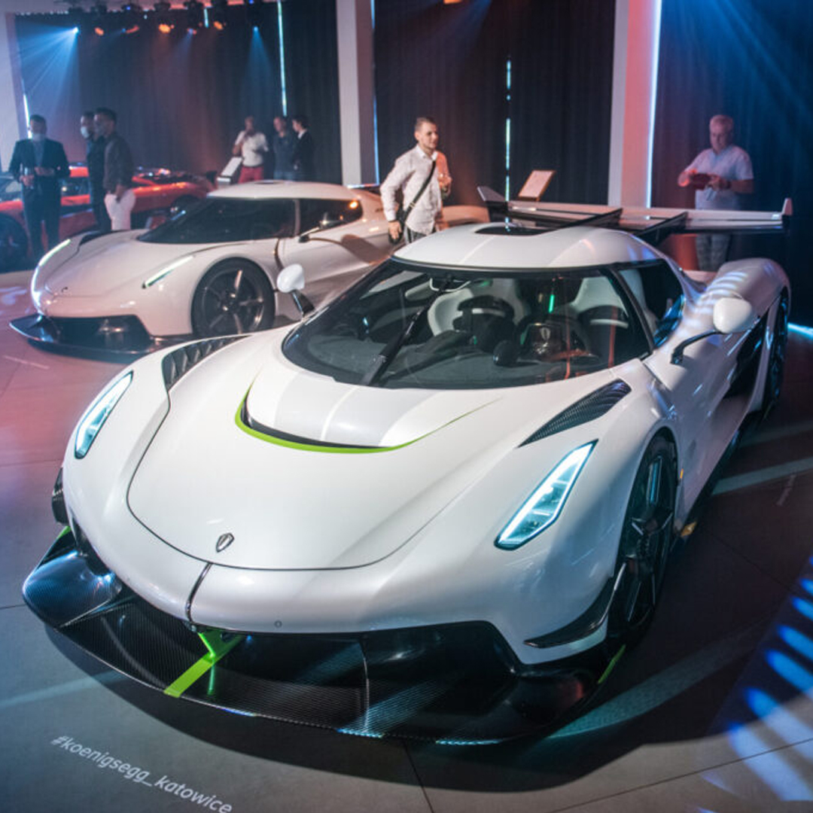
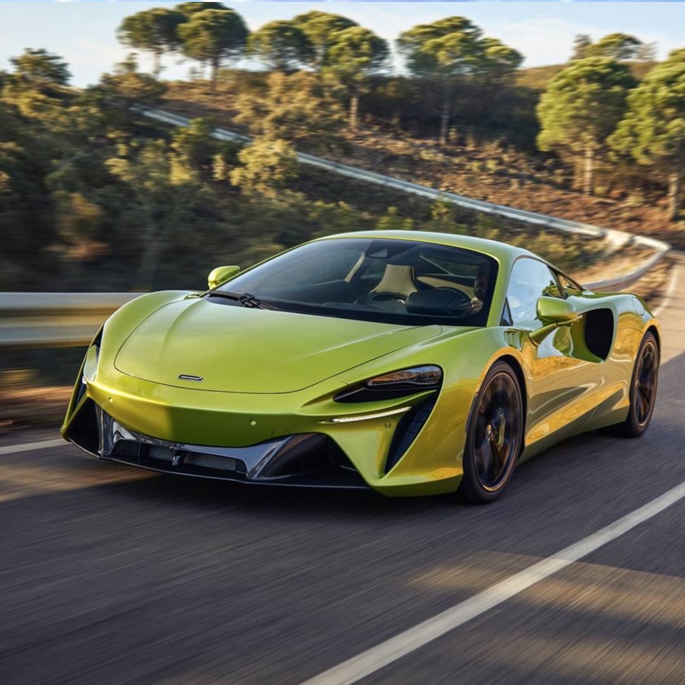

-
Najnowsze wydarzenia i nowości:
Nowy Mercedes EQ-S
Mercedes EQS sensacją. Niemcy otwierają nową erę w motoryzacji.
Wygląda zdecydowanie inaczej niż klasa S. To pierwszy model niemieckiej marki od początku skonstruowany jako samochód elektryczny na osobnej platformie. Stąd zupełnie inne proporcje niż w klasycznej limuzynie.
W kabinie mistrzem pierwszego wrażenia jest MBUX Hyperscreen – duży, zakrzywiony ekran przebiegający niemal przez całą szerokość kabiny.
Czytaj więcej

Nowe Audi Q4 E-Tron
Audi Q4 E-Tron i Q4 E-Tron Sportback
Producent reklamuje te modele jako wszechstronne i bardzo przestronne auta pełniące rolę głównego samochodu w gospodarstwie domowym. Zaawansowanej techniki też nie zabrakło.
Nowe Audi Q4 e-tron pojawi się w salonach już w czerwcu (Sportback późnym latem) - na początek bogatsze modele Edition z matrycowymi światłami LED i kołami 21-calowymi
Prędkość maksymalna słabszych wersji to 160 km/h, maksymalny zasięg osiągniemy wersją Q4 40 e-tron o mocy 204 KM - nie więcej niż 520 km
Czytaj więcej

Nowy Mercedes klasy C
Taka mniejsza „eSka”
Mercedes od 2013 roku kazał czekać na nową generację swego bestsellerowego modelu. Klasa C debiutuje w wersjach sedan i limuzyna. Mercedesa W206 będzie można zamawiać od 30 marca 2021 roku, zaś pierwsze auta pojawią się w salonach latem.
W kabinie obecne są liczne akcenty z nowej klasy S, tyle że w sportowej interpretacji.
Podobnie jak okręt flagowy Mercedesa, także nowa klasa C została wyposażona w drugą generację systemu operacyjnego MBUX
Czytaj więcej

Nowe BMW M5 CS
Zmienia zasady gry. Tak mocnej M-ki jeszcze nie było
Czterodrzwiowy sedan o osiągach supersamochodu - tak w skrócie można opisać nowe BMW M5 CS napędzane 636-konnym V8.
Silnik nie jest jednak jedynym wyróżnikiem tego modelu. Auto intryguje także wyglądem, wystarczy tutaj wspomnieć o żółtych światłach do jazdy dziennej.
Pierwszą setkę zobaczymy na liczniku już po 2,9 sekundy. Prędkość maksymalna wynosi natomiast 306 km/h. A wciąż mówimy o względnie praktycznej, czterodrzwiowej limuzynie. Trzeba jednak przyznać, że auto zauważalnie różni się nie tylko od seryjnej Serii 5, ale i M5 czy M5 Competition.
Czytaj więcej

Shelby Super Snake Speedster
Jest szybki, głośny i nie ma dachu. Tak powinno wyglądać auto marzeń.
Firma Shelby American postanowiła uczcić 98. urodziny swojego założyciela Carolla Shelby’ego, który od 9 lat jeździ po torach w niebiosach. Z tej okazji wypuściła 3 limitowane modele: Shelby GT, GT500 SE oraz najciekawszej – Super Snake Speedster.
Nie ma lepszego sposobu na uczczenie Shelby’ego niż wypuszczenie modelu, którego on sam by się nie powstydził. Jest mocny, szybki, głośny i wygląda obłędnie. Kosztuje około 140 tysięcy dolarów.
Czytaj więcej

Koenigsegg Katowice
Takiej okazji w naszym kraju nie mogłem przepuścić.
To była pierwsza i zapewne jedyna taka prezentacja Koenigsegga w Polsce.
Christian von Koenigsegg przysłał do Polski wszystkie swoje najcenniejsze arcydzieła. W katowickiej galerii La Squadra stanęły obok siebie modele: Jesko, rozpędzająca się do „setki” w zaledwie 1,9 sekundy Gemera, Jesko Absolut, które ma pobić granicę 500 km/h, oraz ONE:1. Ta nietypowa prezentacja to preludium przed otwarciem salonu Koenigsegga w stolicy Górnego Śląska.
Czytaj więcej

McLaren Artura
Superauto ery plug-inów. Bez wstecznego, z wi-fi zamiast kabli i chipami w oponach.
Nowy baby-McLaren staje się jednym z najszybszych modeli w ofercie. Hybrydowy silnik generuje w sumie aż 680 KM, co przekłada się na przyspieszenie do 100 km/h w zaledwie 3 s, do 200 km/h w 8,3 s i prędkość maksymalną 330 km/h.
Brytyjczycy wprowadzają zupełnie nową konstrukcję z ośmioma biegami. Mimo dodatkowego przełożenia i dalszej obecności dwóch sprzęgieł, konstrukcja ta jest krótsza i lżejsza. Takie dokonanie było możliwe między innymi dzięki wyeliminowaniu biegu wstecznego. Jego zadanie przejął silnik elektryczny, który w razie potrzeby po prostu obraca się w przeciwnym kierunku. Z podobnego patentu korzysta od niedawna już Ferrari SF90.
Czytaj więcej

© 2021 Seweryn Nekrasz Automotive Photography